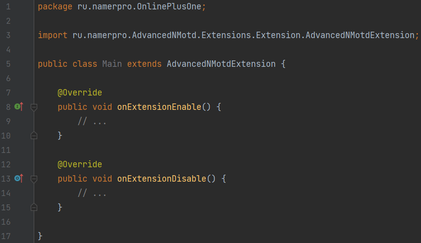
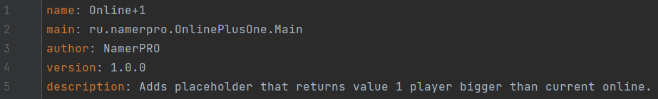
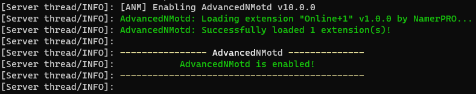

In this tutorial we are going to prepare extension, so AdvancedNMotd would be able to see it.
Firstly, you need to create a project and add AdvancedNMotd.jar as a library. I will not be leaving any comments here, because these are common actions that you should know.
Secondly, create main class and extend from AdvancedNMotdExtension class. This class is abstract, with the only abstract method onExtensionEnable. This means you must override it. You may not override onExtensionDisable method. As can be guessed from names method onExtensionEnable is called right after extension was loaded by AdvancedNMotd and onExtensionDisable is called right before extension is unloaded.
This is how you begin:

Thirdly, you need to create passport.yml file where provide basic information about extension that will be accessed by AdvancedNMotd when it loads it. A good analogy would be a creation of plugin.yml file when developing a plugin for the Spigot server.
The passport.yml file is created in src folder and looks like:

Where in main section is presented path to main class we created. Note, that every field of passport.yml file must be written in it. Otherwise, AdvancedNMotd will throw an exception.
Congratulations! You have successfully prepared extension that can be loaded by AdvancedNMotd. Every extension must be located in AdvancedNMotd/extensions folder.
If you did everything right, you should see the following output in the console:

If you don't know how to create a project or how to build jar file, please, use Google. There are a lot of videos about it.